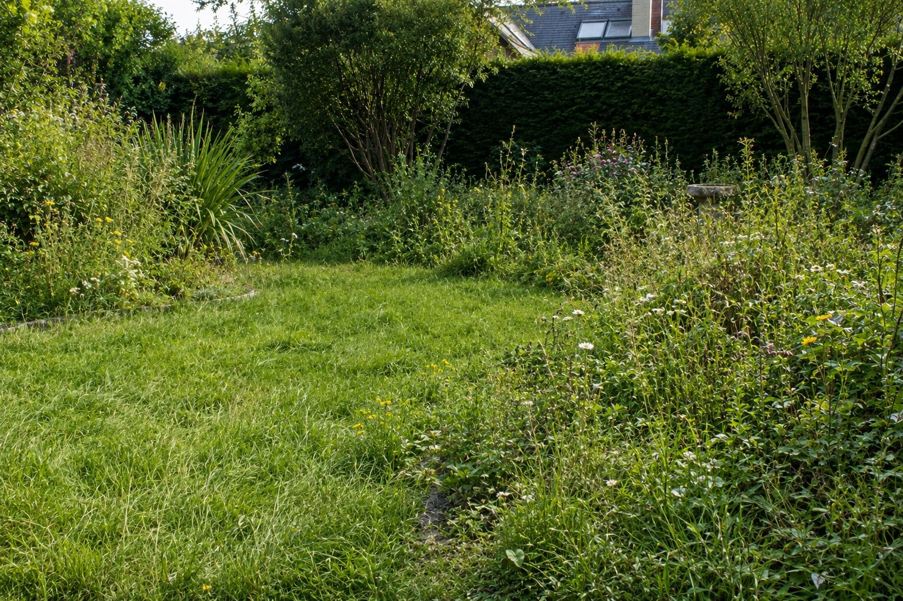

Après un été chaud et sec, beaucoup de jardins ressemblent à de la paille. Gazon jaune, zones grillées, sol dur comme de la pierre. La bonne nouvelle : dans la majorité des cas, votre gazon n'est pas mort. Il est en dormance. Et septembre est exactement le bon moment pour le relancer.

Gazon mort ou gazon endormi ?
C'est la première question à se poser avant de faire quoi que ce soit. Un gazon en dormance peut se relancer complètement. Un gazon mort devra être ressemé. Agir sans savoir lequel c'est, c'est risquer de perdre du temps et de l'argent.
💡 Le test simple : Tirez doucement sur quelques brins de gazon jaune. S'ils résistent et restent ancrés dans le sol — le gazon est vivant, juste endormi. S'ils se détachent sans effort — ces zones sont mortes et devront être ressemées.
Les étapes pour relancer votre pelouse
Ne pas précipiter l'arrosage massif
L'instinct c'est d'arroser abondamment — mais après une longue sécheresse, le sol est tellement compact que l'eau ruisselle sans pénétrer. Il faut d'abord préparer le sol à recevoir l'eau efficacement.
Préparer le sol avant tout
Un sol compacté par la chaleur doit être travaillé avant tout apport d'eau ou d'engrais. Sans cette étape, vous arrosez du béton — l'eau ne descend pas jusqu'aux racines.
Choisir le bon moment pour ressemer
Septembre est la fenêtre parfaite dans le Nord — le sol est encore chaud, les nuits fraîches favorisent la germination et les pluies d'automne font le reste. Mais il y a une date limite à ne pas dépasser.
L'apport nutritif adapté à l'automne
Pas le même engrais qu'au printemps. L'automne demande un apport spécifique pour renforcer les racines avant l'hiver — pas pour stimuler la croissance. Confondre les deux fragilise le gazon pour les mois froids.
⚠️ L'erreur à éviter absolument : Tondre trop court une pelouse stressée par la sécheresse pour "repartir sur de bonnes bases". C'est l'inverse — une herbe courte souffre encore plus. Laissez-la plus haute que d'habitude pendant la phase de récupération.
Combien de temps pour retrouver une belle pelouse ?
Avec les bonnes actions dans le bon ordre, une pelouse stressée par la sécheresse peut retrouver son aspect en 4 à 8 semaines selon l'état de départ et votre type de sol. Certains jardins récupèrent très vite, d'autres nécessitent un plan sur deux saisons. Tout dépend de votre situation précise.
Votre gazon a souffert cet été ?
Envoyez-moi des photos de votre pelouse maintenant. Je vous dis exactement si c'est récupérable, quelles zones ressemer et dans quel ordre agir pour retrouver un beau gazon avant l'hiver — diagnostic à partir de 29€.
📸 Envoyer mon jardin → 29€